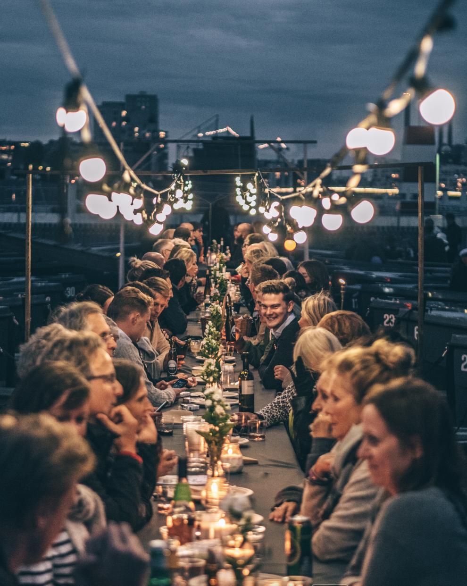

COWBOYKOKKEN
“Hvis jeg kan lave en gryderet og få folk til at være kulturambassadører for noget, de slet ikke vidste noget om før de kom, så går jeg glad hjem i seng”
I gamle dage var det sådan, at jo finere du var – desto længere væk fra hinanden sad du ved et spisebord.
De kongelige sad helt filmisk i hver sin ende af et meget langt spisebord. Nu og da kom der en tjener hen og tog en lille sølv-ting af sit fad. I takt med at vi kommer længere væk fra hinanden med mobiltelefoner og sociale medier, er der begyndt at være en trang om at komme lidt tættere på hinanden igen. Nu er nærmest det fineste, man kan forestille sig share-food, hvilket på en eller anden måde er lidt tragikomisk.
“Det burde jo være det mest naturlige at dele! Det er vand på min mølle.”
William kan rigtig godt lide at få folk til at interagerer med hinanden, især over maden. Det kan de gøre ved noget så simpelt som at dele et stykke brød – og det er jo en mere tusind år gammel trend, som netop har fået et come-back.
“Oftest er de retter man husker aller bedst, jo dem i godt selskab.”
For William er det, der foregår rundt om tallerkenen endnu mere vigtigt, end den kylling, der ligger på den. Mad er i virkeligheden understøttende for den gode oplevelse. Du kan ikke redde en dårlig aften med en god kylling, men du kan godt have en dårlig kylling, men en god aften. Dog får du alligevel aldrig en dårlig kylling hos ham.